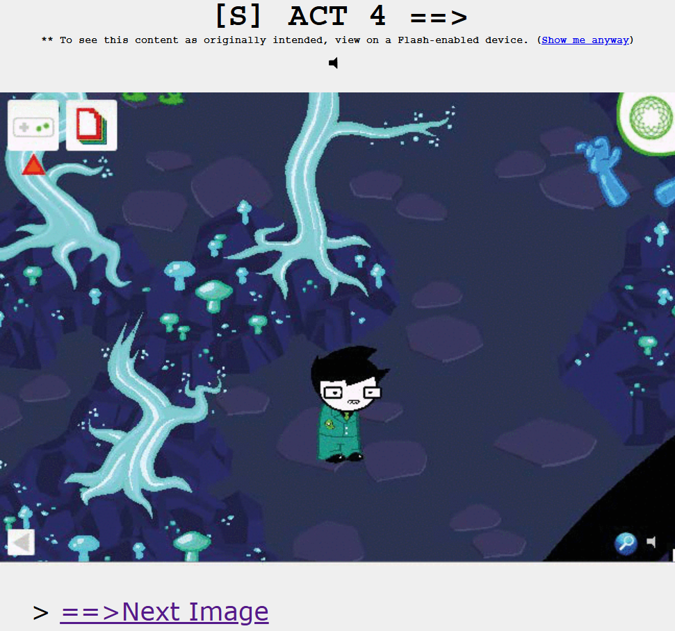
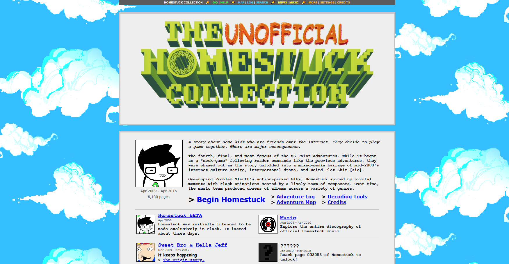

The easiest answer is to go to Homestuck.com, click "Read Homestuck", start at page 1, and stop when you get to the end. But, of course, nothing can be that simple.

The problem is: Homestuck is a comic that takes advantage of its existence as a web-based property, including things like animations and even full games in its reading experience. The vast majority of these multimedia elements utilize Adobe Flash to render themselves, a technology which completely ended support in 2020. While the owners of the official site have tried to find workarounds to this, what this means is most of these sections on the official site are broken or presented in unintended ways: the animations embedded as low-quality YouTube videos, the games removed and recounted as screenshots and text, etc. Most people agree that this is an inferior way to experience the comic. That's where something called "The Unofficial Homestuck Collection" comes into play.

The Unofficial Homestuck Collection is an application created by developers Bambosh and Giovan in the years following Flash's deprecation. It is essentially a custom browser that accesses the entirety of Homestuck, made with the express purpose of completely restoring functionality to everything that has lost it over time. It even includes many extraneous features, such as many quality of life and accessibility settings, modding support, collecting the other works of the same author, archiving the author's blog and update posts, compiling high quality versions of all the music in Homestuck, and presenting all of this in a chronological way which only unlocks elements once you reach the point in the comic when they would have come out; in essense, it aims to accurately recreate the experience of reading through Homestuck as it was actively releasing, but with several nice, modern features. In the current day, this is considered the definitive way to read through the story.